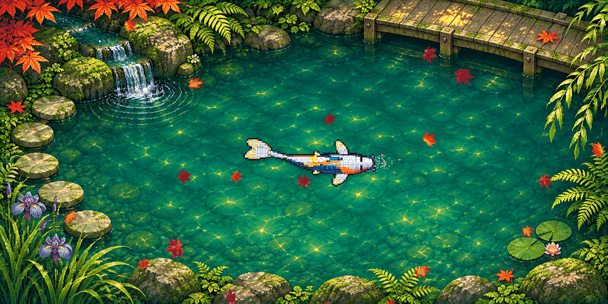
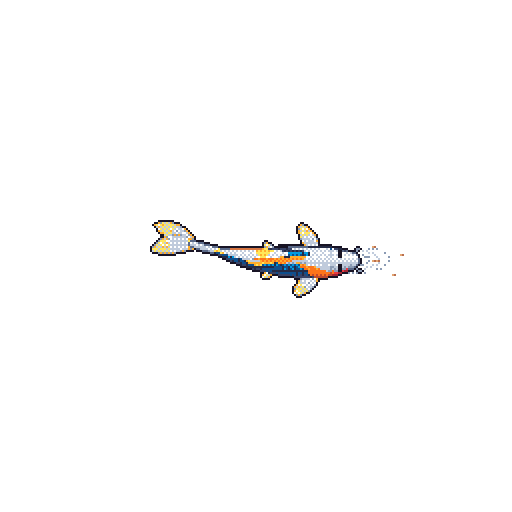

A QUIET CORNER OF THE INTERNET
小さな庭
bangahee’s little garden.
Small commits. Steady growth.
A place for code, curiosity, and koi.

01AROUND THE GARDEN
A little work.
A little growth.
I’m bangahee. This is where I plant ideas, learn by building, and watch small projects take root.
Explore the gardeni.
On the workbench
Experiments, useful tools, and things I’m figuring out.
ii.
In the garden shed
- Python
- JavaScript
- Shell
- Docker
iii.
A little reminder
Progress can be quiet and still be progress.

MEET THE RESIDENT
A koi with a story.
This koi grows alongside my GitHub activity. Languages give it color, contributions help it grow, and streaks leave their marks.
Come back another day. It might have a different story to tell.
Refreshed daily · Made with git-koiPlant an idea.
Give it time.
Watch it grow.